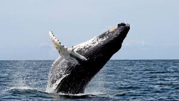
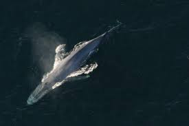
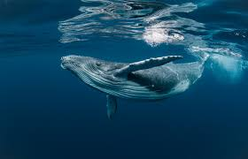

Balena este unul dintre cele mai mari animale care au trăit vreodată pe Pământ. Deși trăiește în apă, balena este un mamifer, la fel ca omul. Ea respiră aer, naște pui vii și îi hrănește cu lapte. Balenele trăiesc în oceanele lumii și sunt cunoscute pentru dimensiunile lor impresionante, inteligență și sunetele speciale pe care le folosesc pentru a comunica. Acest site este dedicat cunoașterii balenelor, modului lor de viață și importanței protejării lor.

Există balene cu fanoane și balene cu dinți, fiecare cu caracteristici speciale.

Balenele trăiesc în toate oceanele lumii și migrează pe distanțe lungi.

Multe specii sunt protejate pentru a preveni dispariția lor.